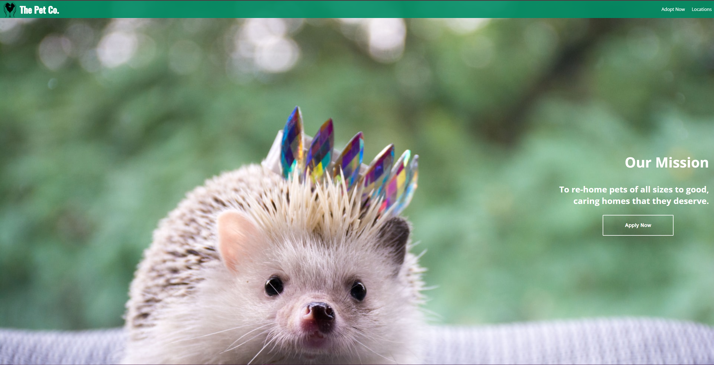
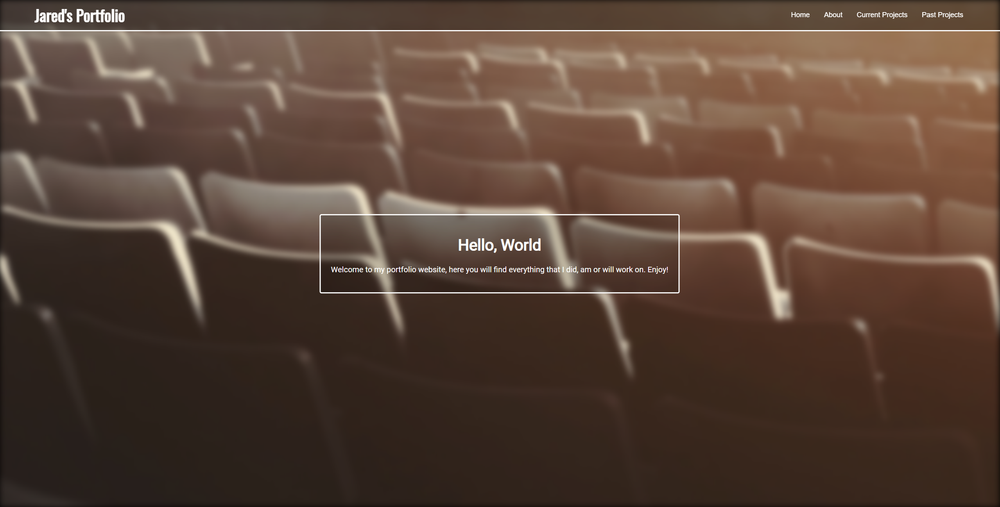

Current Projects
Welcome to my current projects, here you will see any and all projects that I am currently working on. Please be aware that everything in this section is still a work in projects or in BETA if you wish.
Pet-Adoption Website (2020-Present)
A Pet-Adoption website was the idea of one of my friends. I asked for some inspiration, I wanted something to create a website for during lockdown 2020. My mate said, "make a pet adoption website" - and I did. This website offers nothing more than aesthic, it is not functional or responsive in anyway, but it looks great.
My Portfolio (2022-Present)
The website that you're currently viewing this on, is one of my current projects. Currently, the website is still in the very early stages. There is a lot fo work to do, I hope to make it far more responsive and beautiful using JavaScript. Watch this space. While the website is still in development, the only way to access it is through GitHub.